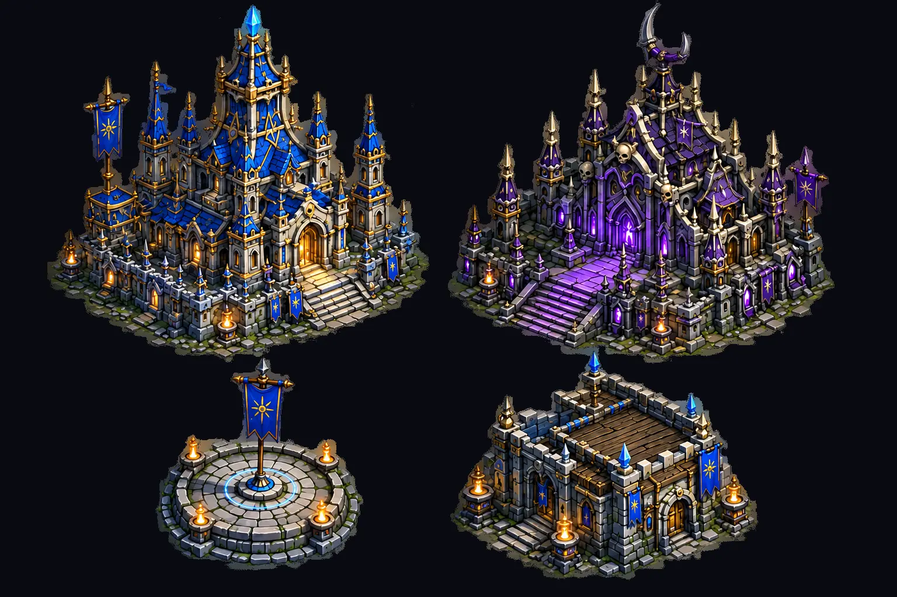
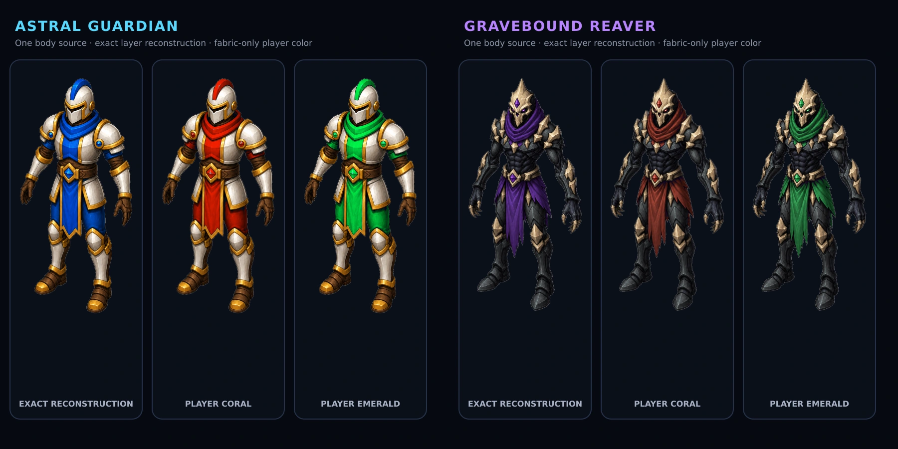
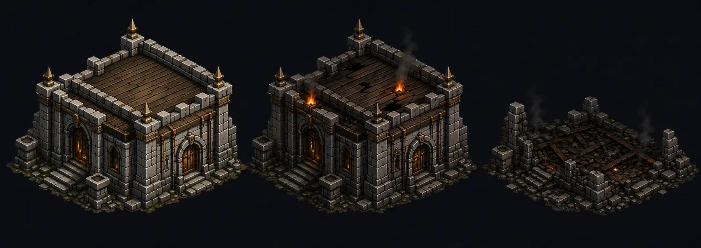
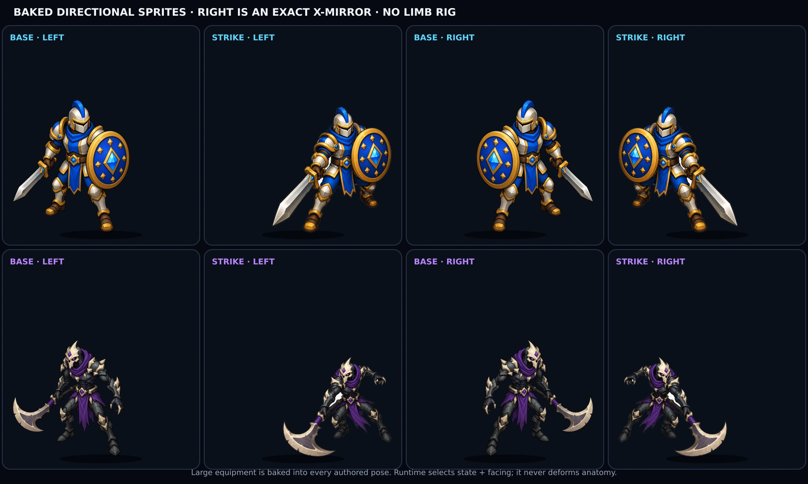
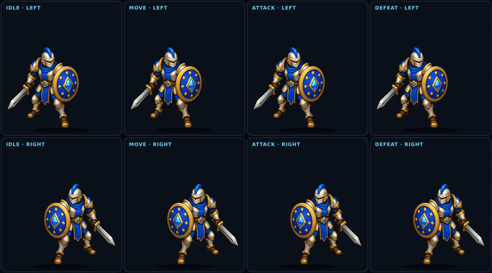
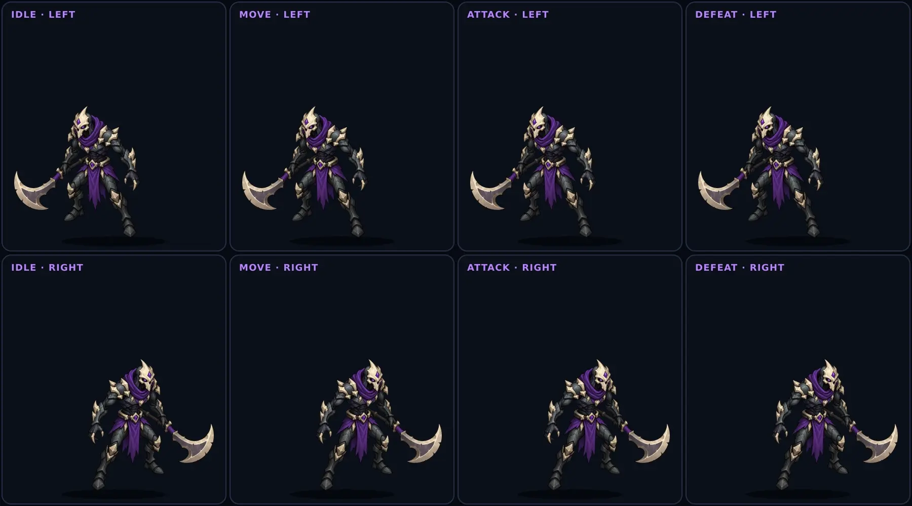

Phase 1A · Historical review record
Useful direction. Superseded motion.
The environment, structures, damage, and player-color boundaries informed the approved direction. The v5 entity frames below do not define current facing, timing, roots, or animation.
01 Battlefield
One world. One style.
This is the immutable environment plate only: hand-painted 2D terrain, hard mountain routes, river, roads, open formation space, and no baked-in entity or structure.
 Open full size
Open full size
02 Accepted input language
Large equipment. Clear identity.
The Guardian reads through shield, diamond, helmet, and mass. The Reaver reads through bone mask, oversized crescent blade, posture, and negative space. Player color changes only the marked fabric and identity accents—not anatomy, equipment, or body materials.
{kind=link}

Open structure set
Open player-color proof
Open damage progression03 Superseded baked-direction proof
No limb rig—but the facing rule changed.
Each visible key pose is a complete, visually audited body with its large weapon and shield already attached. The v5 authored sequence faces left; the right-facing sequence is its exact horizontal mirror. Production now authors right and mirrors left.

Open directional methodInvariant: the browser never rotates or substitutes an arm, leg, weapon, or shield. Player color is a separate mask, and simulation contact remains independent of the visible animation frame.
04 Superseded v5 motion
The state names survived. This timing did not.
Idle, move, attack, and defeat remain the four families, but equal six-frame timing and whole-sprite transforms caused visible drift and unnatural movement. These files are preserved for audit, not replication.
{kind=link}

{kind=link}

Historical scope: one authored left-facing sequence, one exact mirrored right-facing sequence, and six timing frames per family. Current scope: right-authored, left-mirrored, idle 1, move 4, action 6, defeat 6. Simulation ticks—not animation frames—remain authoritative.
{kind=link}
{kind=link}
Recorded owner decision
Keep the useful layers. Replace the motion.
- 01 Accepted: environment-only battlefield and runtime placement
- 02 Accepted: player-color boundary and oversized readable equipment
- 03 Accepted: structure language and health-state damage progression
- 04 Superseded: v5 facing, equal frame counts, roots, and motion